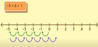
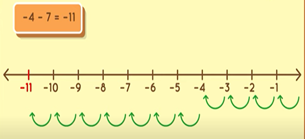

|
-5 + 6 = 1

|
Gambar disamping merupakan penjelasan dari penjumlahan bilangan bulat. |
|
-4 - 7 = -11

|
Gambar disamping merupakan penjelasan dari pengurangan bilangan bulat. |
Kesimpulan |
a + (-b) = a - b
a - (-b) = a + b
|
Perhatikan ilustrasi gambar berikut ini.
Gambar 1 Ilustrasi Penjumlahan Bilangan Bulat
Pada gambar 1 (a) yang mengilustrasikan operasi penjumlahan 3 + 2, berdasarkan gambar tersebut terlihat bahwa pada satu himpunan terdapat 3 anggota dan himpunan yang lain terdapat 2 anggota, sehingga gabungan dari dua himpunan tersebut adalah 5 anggota.
Pada Gambar 1 (b) mengilustrasikan 32 + 51, dimana nilai tempat puluhan diwakili oleh stik dan nilai tempat satuan diwakili oleh koin hitam. Pada ilustrasi tersebut memperlihatkan bahwa untuk menjumlahkan, maka jumlahkanlah sesuai dengan nilai tempat yang sama, yaitu nilai tempat puluhan dengan puluhan (30 +50) dan nilai tempat satuan dengan nilai tempat satuan (2 + 1), sehingga hasil akhirnya adalah 83.
Gambar 2 Ilustrasi Penjumlahan Bilangan Bulat Positif dengan Positif, Negatif dengan Negatif dan Positif dengan Negatif
Perhatikan Gambar 2 yang mengilustrasikan penjumlahan bilangan bulat positif dengan positif, penjumlahan bilangan bulat negatif dengan bilangan bulat negatif, dan penjumlahan bilangan positif dengan bilangan bulat negatif dengan menggunakan media konkret. Media konkret yang digunakan adalah gambar koin berwarna hitam dan putih. Dari gambar 2 tersebut, dapat ditunjukkan atau digambarkan sebagai berikut.
(1) Gambar 2 (a) mengilustrasikan 3 koin hitam digabungkan dengan 1 koin hitam sehingga menjadi 4 koin hitam, atau 3 + 1 = 4.
(2) Gambar 2 (b) mengilustrasikan 2 koin putih atau dan digabungkan dengan 1 koin putih sehingga menjadi 3 koin merah, atau (-2) + (-1) = (-3).
(3) Gambar 2 (c) mengilustrasikan 4 koin putih digabungkan dengan 3 koin hitam (ketentuan menyebutkan bahwa pada saat koin berbeda warna digabungkan akan bernilai 0), sehingga hanya menyisakan 1 koin putih, atau(-4) + 3 = -1.
Gambar 3 Ilustrasi penjumlahan bilangan menggunakan garis bilangan
Perhatikan ilustrasi Gambar berikut ini.
Gambar 4 Ilustrasi pengurangan bilangan bulat positif
Gambar 4, mengilustrasikan 5 – 2 = 3. Dengan menggunakan garis bilangan(perlu diperhatikan aturan yang telah disepakati pada operasi hitung penjumlahan) berlaku, suatu bilangan bulat positif menggambarkan gerakan kearah kanan, sedangkan bilangan bulat negatif menggambarkan gerakan kearah kiri, dan operasi hitung pengurangan diilustrasikan dengan langkah mundur. Untuk mengilustrasikan 5 – 2, dari titik 0, bergerak maju sebanyak 5 langkah ketitik 5, kemudian mundur 2 langkah, sehingga berakhir di titik 3, atau 5 – 2 =3.
Gambar 5 Ilustrasi pengurangan bilangan melibatkan nilai tempat
Gambar 5 di atas mengilustrasikan pengurangan 53 – 29. Satu ikat lidi yang terdiri dari 10 lidi melambangkan nilai tempat puluhan, dan satu lidi melambangkan nilai tempat satuan. Untuk mengilustrasikan 53 – 29, maka terdapat 5 ikat lidi puluhan dan 3 lidi satuan, dari kumpulan lidi tersebut akan diminta 2 ikat lidi puluhan dan 9 lidi satuan. Untuk memudahkan, 1 ikat lidi satuan akan dipecah menjadi 10 lidi satuan, sehingga menjadi 4 ikat lidi puluhan dan 13 lidi satuan. Setelah diminta maka akan tersisa 2 ikat lidi puluhan dan 4 lidi satuan atau 53 – 29 = 24.
Gambar 6 Ilustrasi pengurangan bilangan bulat
Pada Gambar 6 di atas, bilangan bulat positif diwakili oleh koin berwarna hitam, dan bilangan negatif diwakili oleh koin berwarna putih.
Gambar 6 (a) mengilustrasikan terdapat 6 koin hitam kemudian akan diambil 2 koin hitam, sehingga sisanya adalah 4 koin hitam, atau 6 – 2 = 4.
Gambar 6 (b) mengilustrasikan terdapat 4 koin putih kemudian akan diambil 1 koin putih, sehingga sisanya adalah 3 koin putih, atau (-4) – (-1) = (-3).